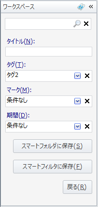
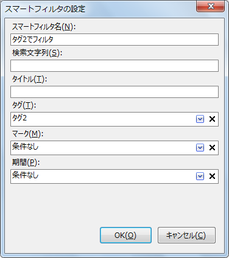
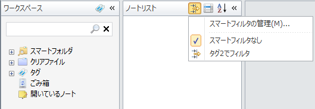

スマートフィルタを使う
検索条件をスマートフィルタに保存することができます。 ノートリストペインにスマートフィルタを設定すると， スマートフィルタに保存された検索条件に合うノートだけがノートリストに表示されるようになります。
検索条件を保存してスマートフィルタを作る
スマートフィルタを作るには，まずワークスペースペインでノートの検索条件を入力します。
ワークスペースペイン上部の「検索」テキストボックスの「検索」アイコンをクリックして 検索用の画面(クエリビルダと呼びます)を表示します。 「検索」テキストボックスには，ノートのタイトルや本文に含まれる文字列を入力しますが， 他の条件のみで検索したい場合は空のままでもかまいません。 ここでは「検索」テキストボックスは空のままにしておき，タグの条件に「タグ2」を設定します。

この検索条件を保存してスマートフィルタにするにはクエリビルダ下部の「スマートフィルタに保存」ボタンを押します。 指定した条件が入力された状態で「スマートフィルタの設定」ダイアログが表示されます。

スマートフィルタ名を適宜変更して「OK」ボタンを押すとスマートフィルタが作成されます。 ノートリストペインの「スマートフィルタ」ボタンをクリックすると保存したスマートフィルタが表示されます。

スマートフィルタを選択すると，ワークスペースペインで選ばれたノートのうち， スマートフィルタの設定に合うノートだけがノートリストペインに表示されるようになります。